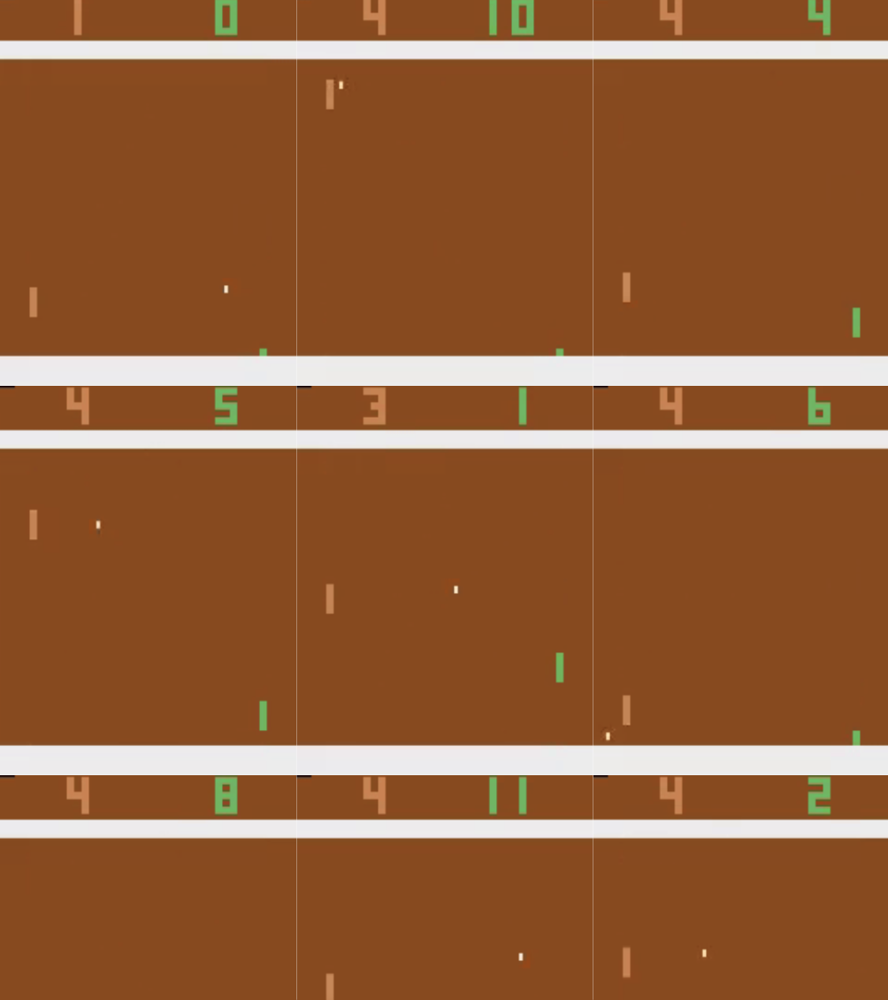
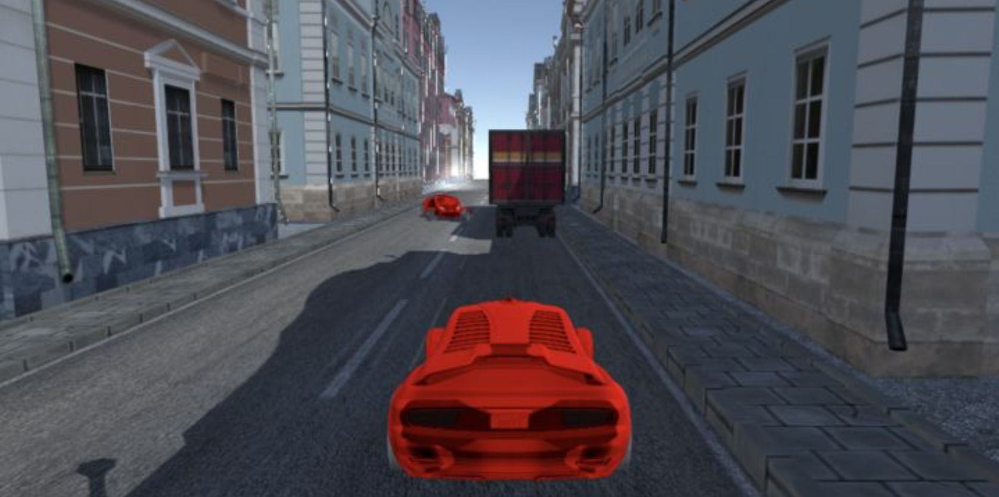
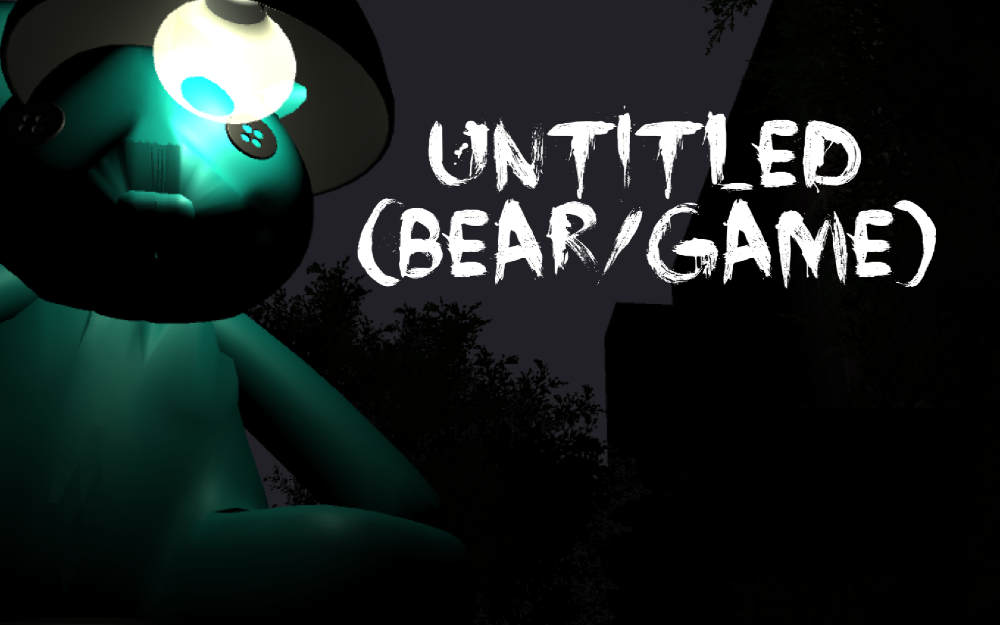

AMRL
Microsoft Research (First Author)
Wrote a paper, as the first author, published at ICLR 2020, as part of a pre-doc with MSR. The work demonstrates the the sensitivity of modern memory approaches to policy stochasticity and noise in deep RL. We propose a solution framework that improves average return by 19% over a baseline with the same number of parameters, and by 9% over a DNC, with many more parameters.
Feedback was very positive. For example, Reviewer1 states:
"The experiments provided are good, and vary nicely between actual RL runs and theoretical analysis, all of which convinces me that this could well become a standard Deep RL component... It would be good to see more papers proposing new neural components with this kind of rigour."
Paper [ICLR]
Paper [Microsoft]
Publicity 1
Publicity 2
Note, OpenReview scores are now out of 8, and 6 is second greatest possible score.

Stackelberg Vehicles
SDC Lab (Research Member)
Worked in Brown's Self-Driving Car Lab on social interactions between humans and autonomous vehicles, calculating Stackelberg equilibria in game trees. Paper published at the 2019 International Conference on Social Robotics.

Human-Actor Human-Critic
Masters Research (Lead)
Lead research on learning from human demonstration and human feedback. We propose a framework and evaluate novel methods where the feedback is interpreted as a distance or direction in the action space.

Collaboration in Deep MARL
PhD Proposal
The initial proposal of research for my PhD. The proposal identifies a problem common to policy gradient approaches in deep multi-agent RL (Deep MARL) with centralized training but decentralized execution. Moreover, it proposes a novel information theoretic method as a starting place for investigation.


Neural Mesh
Research Lead
Research into a biologically inspired RNN with a notion of space and conservation of energy, for a graduate AI seminar.

CaRL
SDC Lab
We made a DQN for lane sharing as our first lab project. The goal for the agent was to get to the other side of the truck as fast as possible without crashing. We compared the performance of the RL agent to a human, against three different "dumb" AI opponents that had different aggression levels.

Food with Friends
Co-founder
Food with Friends (FF) is an iOS application for organizing meals with friends that is geared towards college students. FF makes it easy to find a place to eat near everyone and cancel if too many people come. FF also alerts users if they pass by another friend who is eating and enables users to make new friends eating in the same dinning hall. Responsible for: multi-threading, algorithms, maps and texting api, user data storage, user management, product ideas, UI, logo, design. Note, the server is no longer active. No New Accounts can be created.

Report for Graduate Robotics Seminar
Co-Author
Coded an agent in Minecraft using reinforcement learning and emotion detection implemented via computer vision (OpenCV).
.png)
GYNN
Group Member
Implemented a deep convolutional generative adversarial network (DCGAN) for a deep learning graduate seminar. The neural network completes faces with up to 80% of the pixels missing.

Untitled (Bear/Game)
Project Lead
A horror video game featuring Brown University's very own Blueno the Bear – aka Untitled (Lamp/Bear).

Terminal Velocity
Group Member
A simple platformer with a twist. (Made in Unity.)

LeopardBoy Spaceman
Project Lead
Winner of the Kalundborg Game Jam 2017. A simple game with a grappling hook mechanic. Made in Unity in 30 hours minus sleep.